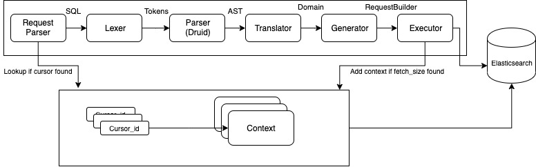
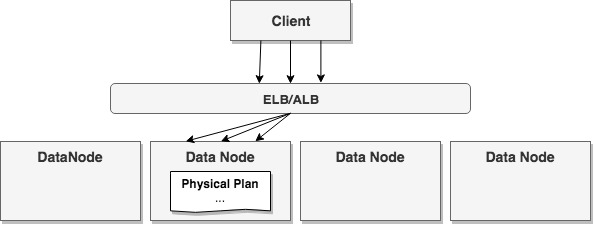
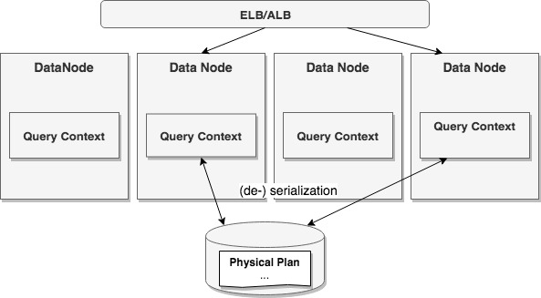
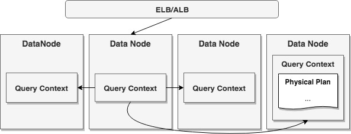
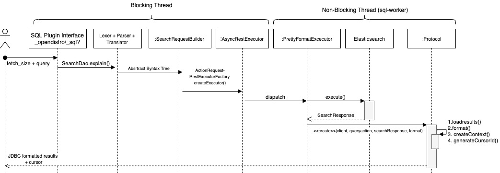
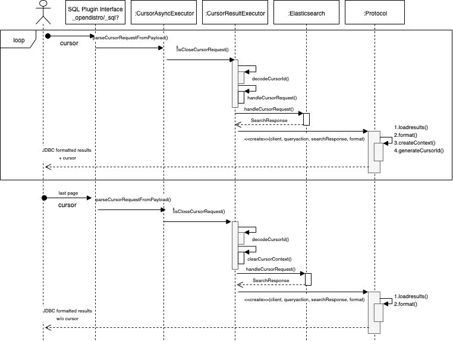

OpenSearch SQL Cursor (Pagination) Support¶
1. Overview¶
In database area, cursor is “a control structure that enables traversal over the records”. It is especially helpful for traversing large result set on a page by page basis. Without pagination or persistence, the entire result set will be resident in memory until last row comes in.
In our SQL plugin the current functionality inherited is broken and missing for most queries. And it is challenging for JOIN query whose result set cannot be paginated by native OpenSearch Scroll easily.
Support for cursor is a fundamental requirement of any SQL engine.
2. Requirements¶
General cursor support: https://github.com/opendistro-for-elasticsearch/sql/issues/16
2.1 Use Case¶
There are two typical use cases of cursor:
In the absence of cursor they are limited by the max of 10000 documents by OpenSearch by default. The max number fo results could be changed using
index.max_result_windowsetting on index level. Since the number of docs for an index can vary, the user would not know unless they see inconsistent result, and they have to change this setting manually which is not a very good experience.Interaction with SQL plugin via OpenSearch Dashboards or other web interfaces to skim through only the first few pages of a large result set.
Integration with BI tools or other batch processing program via JDBC/ODBC driver to load full result set for analysis.
2.2 Functionalities¶
Based on the use cases, the following capabilities are required:
Paging: Paginate and transfer large result set to client side.
Efficient: Make tradeoff between efficiency and system resource usage.
Reliable: Ensure no orphan context left and kept consuming resource in any case.
Variety: Should be able to work with different format types like JDBC, CSV etc
2.3 Scope¶
Phase I:
Type of Query
SELECT : Already supported but in the hint manner which mixed long cursor ID with same query itself for each following fetch after the first one.
Format type: We will consider format for JDBC driver only for now as it used by both JDBC and ODBC driver. It is also used by SQL CLI.
JDBC support for cursor
ODBC support for cursor
Phase II:
SELECT with GROUP BY (aggregation query)
Phase III:
EQUI-JOINS: Since we only have query plan framework (unfinished physical plan) for equi-joins, we will be supporting this.
Support for text based formats such as CSV , RAW (pipe separated).
Out of Scope:
Non EQUI-JOINS: Nested Loop joins are used for such queries. It does not use scroll optimization like HashJoin and needs to bring in all the data to the coordinating node for correct results.
MULTI_QUERY: Same problem as Nested Loop
3. Design¶
3.1 Different Type of Cursors¶
Every cursor uses temporary resources to hold its data. These resources can be memory, a disk paging file, temporary disk files, or even temporary storage in the database. The cursor is called a client-side cursor when these resources are located on the client machine. The cursor is called a server-side cursor when these resources are located on the server machine.
(a) Client-Side Cursors With a non-keyset client-side cursor, the server sends the entire result set across the network to the client machine. The client machine provides and manages the temporary resources needed by the cursor and result set. The client-side application can browse through the entire result set to determine which rows it requires.
Pros:
One obvious benefit of the client-side cursor is quick response. After the result set has been downloaded to the client machine, browsing through the rows is very fast. Your application is generally more scalable with client-side cursors because the cursor’s resource requirements are placed on each separate client and not on the server.
Cons:
Client-side cursors may place a significant load on your workstation if they include too many rows
Since we are limited by OpenSearch to get all the results we cannot materialize this.
This will require significant work for each client JDBC driver, ODBC driver, SQL CLI, OpenSearch Dashboards on how to maintain the client resources and parse the state. It is therefore not scalable.
This defeats the purpose of pagination if we load the whole data to client side, as the user/application might only need the first few pages and discard the rest. This will also put pressure on network traffic and can increase latency.
(b) Server-Side Cursors With a server-side cursor, the server manages the result set using resources provided by the server machine. The server-side cursor returns only the requested data over the network. This type of cursor can sometimes provide better performance than the client-side cursor, especially in situations where excessive network traffic is a problem.
Pros:
The client does not need to cache large amounts of data or maintain information about the cursor position because the server is doing that.
If you are going to access only some of the data in the result set, or access the data just a few times, a server-side cursor minimizes network traffic.
Scalable to many clients as they shielded by implementation details of how the cursor context is handled, and allows for creating a clear , consistent and compatible interface.
Cons:
A server-side cursor is — at least temporarily — consuming precious server resources for every active client.
Based on the cons of client side cursors, and the limitation imposed by OpenSearch, implementing client side cursor is not feasible.
3.2 Protocol¶
Here is a sample of the request response API for the cursor queries. The client only needs cursor field to fetch the next page. This interface allows clients to de-couple the parsing logic of state.
Since we are implementing server side cursors, either OpenSearch SQL plugin or OpenSearch needs to maintain state which consumes hardware resources like memory, file descriptors etc. The conserve such resources we provide a clear cursor API to clear resources explicitly, before it is automatically cleaned after expiry.
# 1.Creates a cursor
POST _plugins/_sql?format=jdbc
{
"query": "SELECT * FROM accounts",
"fetch_size": 5
}
# Response
{
"status": 200,
"total": 100,
"size": 5,
"schema": [...],
"datarows": [...],
"cursor": "cursorId"
}
# 2.Fetch next page by cursor provided in previous response
POST _plugins/_sql?format=jdbc
{
"cursor": "cursorId"
}
# Response
{
"datarows": [...],
"cursor": "cursorId"
}
# No cursor in the last page
{
"datarows": [...]
}
# 4.Clear the state forcibly earlier than last page be reached
POST _plugins/_sql/close
{
"cursor": "cursorId"
}
# Response
{
"succeeded" : true
}
3.3 Support in JDBC¶
To use the pagination functionality programmatically using theJDBC 4.1 specification, page size is being used as performance hint given by Statement.setFetchSize() and “applied to each result set produced by the statement”. We need to re-implement Statement.executequery() and ResultSet.next() to take advantage of cursor.
We will not support backward scroll on result set. The Statement must be created with a ResultSet type of ResultSet.TYPE_FORWARD_ONLY. Attempt to scroll backwards or otherwise jump around in the ResultSet should throw an exception.
A basic use case of using cursor is shown below. To support Tableau or other existing BI tools, we will turn on the cursor support by default if the backend SQL Plugin supports pagination.
Statement stmt = conn.createStatement();
// Turn the cursor on
stmt.setFetchSize(20);
ResultSet rs = stmt.executeQuery("SELECT firstname, lastname FROM mytable");
while (rs.next())
{
System.out.print("a row was returned.");
}
// Explicitly close the cursor
rs.close();
// Turn the cursor off.
// A hint to fallback on default implementation to fetch max results where possible.
st.setFetchSize(0);
rs = st.executeQuery("SELECT * FROM mytable");
while (rs.next())
{
System.out.print("many rows were returned.");
}
rs.close();
// Close the statement.
st.close();
3.4 Integrating with SQL Plugin¶

Since we are supporting cursor for different type of queries using different implementation, we may need to maintain some state (context). This context is used when we fetch next batch of results. Maintaining context is not a requirement, but may be needed.
3.6 Different approaches for different SQL queries¶
3.6.1 SELECT
Simple SELECT with WHERE and ORDER BY clause can be supported by using the following OpenSearch APIs
(A) From and Size
From ideal pagination point of view from and size is API needed by the client. Pagination of results can be done by using the from and size but the cost becomes prohibitive when the deep pagination is reached. The index.max_result_window which defaults to 10,000 is a safeguard, search requests take heap memory and time proportional to from + size.
Cons: Inefficient
(B) Scroll
While a search request returns a single “page” of results, the scroll API can be used to retrieve large numbers of results (or even all results) from a single search request, in much the same way as you would use a cursor on a traditional database.
Pros: A scroll returns all the documents which matched the search at the time of the initial search request. It ignores any subsequent changes to these documents.
Cons: Normally, the background merge process optimizes the index by merging together smaller segments to create new, bigger segments. Once the smaller segments are no longer needed they are deleted. This process continues during scrolling, but an open search context prevents the old segments from being deleted since they are still in use. Keeping older segments alive means that more disk space and file handles are needed. Ensure that you have configured your nodes to have ample free file handles
(C) Search After
The Scroll API is recommended for efficient deep scrolling but scroll contexts are costly and it is not recommended to use it for real time user requests. The search_after parameter circumvents this problem by providing a live cursor. The idea is to use the results from the previous page to help the retrieval of the next page.
Cons: It is very similar to the scroll API but unlike it, the search_after parameter is stateless, it is always resolved against the latest version of the searcher. For this reason the sort order may change during a walk depending on the updates and deletes of your index.
(A) does not meet efficiency requirement. (C) has consistency problems. So Scroll** (B)** would be the right solution , as it is consistent can be implemented in a stateless manner on plugin side. Even though it does maintains context natively, it expires eventually if not used.
3.6.2 SELECT WITH GROUP BY
The terms aggregation is meant to return the top terms and does not allow pagination. If we want to retrieve all terms or all combinations of terms in a nested terms aggregation we should eventually migrate to Composite aggregation which allows to paginate over all possible terms rather than setting a size greater than the cardinality of the field in the terms aggregation.
This aggregation can be used to paginate all buckets from a multi-level aggregation efficiently. This aggregation provides a way to stream all buckets of a specific aggregation similarly to what scroll does for documents.
How to paginate using Composite Aggregation natively without pagination support:
# initial query
curl -X GET "localhost:9200/_search?pretty" -H 'Content-Type: application/json' -d'
{
"aggs" : {
"my_buckets": {
"composite" : {
"size": 2, <-----fetch_size
"sources" : [
{ "date": { "date_histogram": { "field": "timestamp", "calendar_interval": "1d" } } },
{ "product": { "terms": {"field": "product" } } }
]
}
}
}
}
'
# Response
{
...
"aggregations": {
"my_buckets": {
"after_key": {
"date": 1494288000000,
"product": "mad max"
},
"buckets": [
{
"key": {
"date": 1494201600000,
"product": "rocky"
},
"doc_count": 1
},
{
"key": {
"date": 1494288000000,
"product": "mad max"
},
"doc_count": 2
}
]
}
}
}
# Paginating using after parameter:
curl -X GET "localhost:9200/_search?pretty" -H 'Content-Type: application/json' -d'
{
"aggs" : {
"my_buckets": {
"composite" : {
"size": 2,
"sources" : [
{ "date": { "date_histogram": { "field": "timestamp", "calendar_interval": "1d", "order": "desc" } } },
{ "product": { "terms": {"field": "product", "order": "asc" } } }
],
"after": { "date": 1494288000000, "product": "mad max" }
}
}
}
}
'
Since all the information needed to retrieve the next page requires the original query and after keys, this can be implemented in a stateless manner by decoding it in cursor Id
3.6.3 JOINS
Query context contains unfinished physical plan with state in each operator which consists of hash table in Join and remaining rows in Join and Scroll.
3.6.3.1 Connect to Same Node From Client Side:
One option is to try to connect to the same node with query plan all the time. However, it seems that either Load balancer Session Sticky or Keep-Alive HTTP Connection requires setup on load balancer side.
Pros::
Easy: to implement and understand because query plan execution is identical as before.
Cons::
Dependency: on configuration of load balancer.
Workload skew: because of no load balance any more.

Diagram-1: Always connect to same data node
3.6.3.2 Context Lookup:
In the case that requests dispatched to different nodes is inevitable, context lookup in cluster is required with the following approaches.
A) Reroute to Node with Context Inside OpenSearch: route the request to stateful node with the context, fetch result set and return to client side:
Pros:
Lightweight: only 1 node maintains the context with small footprint in memory.
Cons:
One more hop: to pass the result from stateful node to “coordinator” node.
Workload skew.
Concurrency control.

Diagram-2: Reroute request to the node with context
B) Persist Context to OpenSearch Index:
Persist context to OpenSearch index and query it from any node that is serving client request.
Pros:
Explicit node communication logic is not required since OpenSearch query API can take care of the context lookup.
In the event of loss of node the context is not lost, as index will be replicated by OpenSearch.
Cons:
Extra overhead: of (de-)serialization and network communication incurred by OpenSearch query.
Index maintenance: OpenSearch index is not designed for frequent update so new context should be appended. It is possible that the index becomes huge without deleting old context documents in the case of large context.

Diagram-3: Persist context to OpenSearch index
3.6.3.3 Context Rebuild
Instead of maintain the context, this solution focus on rebuild the context on the fly. Let us take an example join query
{
"query": "SELECT a.name, b.name FROM A as a JOIN B as B on a.name = b.name"
"fetch_size": 10
}
In the current implementation, the HashJoin scrolls both the tables block-by-block till it exhausts all the rows from both tables and passes the whole result set to the client.
For cursor, instead of fetching rows exhaustively we can scroll the until we have enough rows needed by the client. There may be more rows than requested by fetch_size. We can pass the extra datarows to client including fetch_size datarows, and serialize the unfinished physical plan in cursor Id (which includes the scroll Id of both the tables).
For subsequent request for next pages, we have all the information needed to retrieve next page as the execution plan and scroll Ids can be decode from cursor Id
Pros:
Stateless implementation.
Fixed Space Complexity.
No need to maintain the context.
Cons:
We will be sending extra datarows to the client than initially requested by the client using fetch_size but this can be handled transparently by the JDBC driver which is our major use case.
(A) is good option for cursor used by customers in the interactive way who just glance over a few pages. This will require major work to implement the transport action to communicate “context host node” with “coordinator node“. It will also require home grown solution to clear the context by the plugin. This can be big blocker if implementation needs changes on OpenSearch.
(3.6.3.3) From the point of view of SQL plugin this approach is stateless and resolves the node to node communication problem. Since the scroll context will be handled natively by OpenSearch, contexts will cleared automatically when it timeouts or explicitly by using
clear cursorAPI. This solution also aligns with the stateless solution for simple and aggregation queries.
Based on above analysis 3.6.3.3 is the solution to go ahead for JOINS.
3.6.4 SUBQUERY
Right now subqueries are converted internally to simple queries or JOINS. So, if the above cases work subqueries should be handled.
3.6 Other Formats¶
To support additional text formats such as CSV, RAW or TABLE (format=table) in future, the only additional change required is to how to send the cursor. This can be achieved by sending the cursor through Cursor HTTP header.
Right now there is inconsistency in results for csv and jdbc format. This is because CSV and JDBC result formatting have 2 parallel codebases, so fix in one wouldn’t work with another and one needs to always remember to double check. Example: CSV formatter supported all aggregations (Percentile, Numeric SimpleValue, Numeric Multiple), and JDBC supported only one: Numeric SimpleValue. This would be another major work to cleanly support other text formats.
Recommendation: The csv (or other formats) should use results of JDBC formatter and do simple transformation of results. The logic, that is currently not presented in JDBC formatter must be brought there.
4. Detailed Design¶
4.1 General flow:¶
4.1.1 First page request:

4.1.2 Subsequent page request and last page request

4.2 Salient Points:¶
By default all requests will be a cursor request - meaning the response will contain
cursorkey to fetch next page of result. This is true for all queries which cursor is supported.Cursor is supported only via
POSTHTTP request.If
fetch_sizeis omitted from request, the query will fallback to non-cursor behavior.A
fetch_sizevalue of 0, will imply no cursor and query will fallback to non-cursor behavior too. This will allow to use/not-use cursor on a per query basis.If SQL query limit is less than
fetch_size, no cursor context will be open and all results will be fetched in first page.Negative or non-numeric values of
fetch_sizewill throw400exception.If
cursoris given as JSON field in request, other fields likefetch_size,query,filter,parameterswill be ignored.Like OpenSearch’s scroll, SQL plugin may keep state in OpenSearch to support the cursor. Unlike scroll, receiving the last page is enough to guarantee that the OpenSearch state is cleared.
Multiple invocations of clearing the cursor, will succeed.
Using the cursor after context is expired will throw error.
4.3 Settings:¶
When OpenSearch bootstraps, SQL plugin will register a few settings in OpenSearch cluster settings. Most of the settings are able to change dynamically so you can control the behavior of SQL plugin without need to bounce your cluster. For cursors we will be exposing the following settings:
plugins.sql.cursor.keep_alive¶
This setting controls the how long the cursor context is open for all cursor requests.
You can five the time in human readable time format like 5h (5 hours) or 20s (20 seconds) etc.
The default value is 1m.
This setting is node scope.
This setting can be updated dynamically.
This can be
persistentandtransient.
Example:
>> curl -H 'Content-Type: application/json' -X PUT localhost:9200/_cluster/settings -d '{
"transient" : {
"plugins.sql.cursor.keep_alive" : "200s"
}
}'
Response:
{
"acknowledged" : true,
"persistent" : { },
"transient" : {
"plugins" : {
"sql" : {
"cursor" : {
"keep_alive" : "200s"
}
}
}
}
}